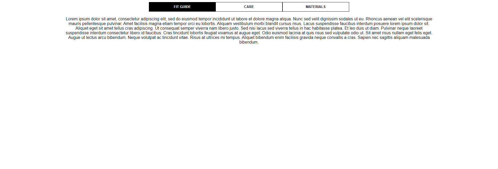

Web Projects
-

Three Panel Responsive JavaScript
The purpose of this was to build a responsive component using HTML, CSS, and JavaScript. Matching a design based on cleanly written, semantic Front End code. JavaScript was hand coded using Vanilla ES5/ES6+. Implementable on iOS, Android, Chrome, Safari, Firefox, Edge, and IE11+. There are CSS transitions, Accordions + and - at the mobile view.
-
Uber Project: San Francisco Movie Locations Node.JS
The Project goal was to create a service that shows on a map where movies have been filmed in San Francisco. The user should be able to filter the view using autocompletion search. Technologies Used were Node.JS, Google Maps API. Node.JS, Google Map API
-
TV Maze in React.JS
Create an interface that has an input that will search the TV Maze API using React.JS. The targets are to display the results with light formatting to make it readable (title, description, image). Success in: the initial page having a text input and button. Successfully API call, and displaying the results in a view that is human readable.
-
Socket.io Project
This project is a Socket.io Project. I will use a JavaScript Framework that makes it looks Sexy. I need Express, React, Redux. Immutable JS,
-
CSUN Google Maps API Project
Create an interface that has an input that will search the TV Maze API using React.JS. The targets are to display the results with light formatting to make it readable (title, description, image). Success in: the initial page having a text input and button. Successfully API call, and displaying the results in a view that is human readable.
-
J2 Global Based Project
I used a RESTful API, and need to show you. This is in Angular.
Java Web Applets
These are my Java Projects using Spring, JSF, Vaadin and More to Come.
- Java Vaadin Based Banking Concurrency Project
- Java Reactive Chatting Application Springboot
- Java Project involving Multi Threaded Application
- Java Data Structure & Algorithm Projec as Web App
- Java Data Structure & Algorithm Projec as Web App
The Descriptive Content Goes Here
Contact Ian
There will be an ability to contact Ian professionally. Possibly the Social Media Links which are limited to GitHub and LinkedIn